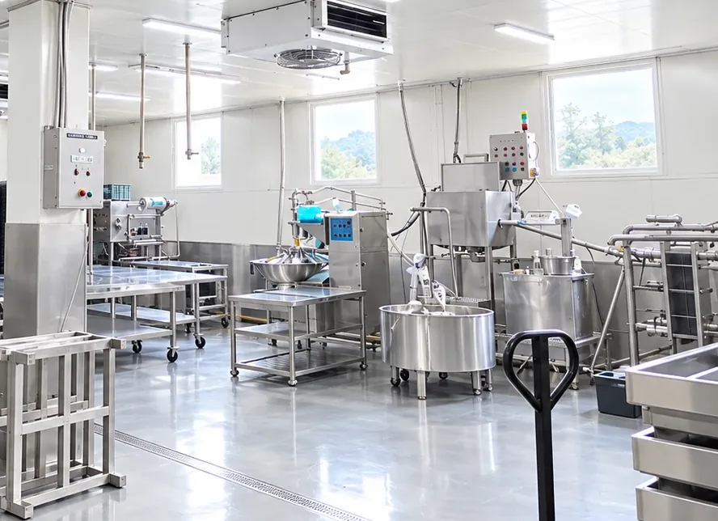
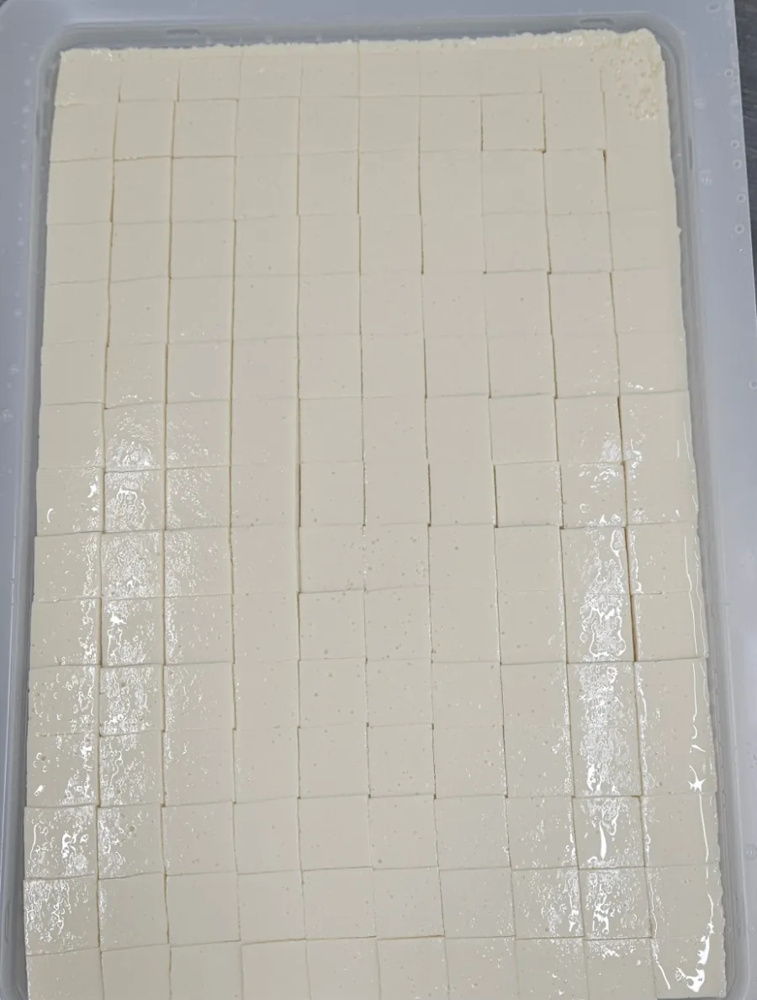
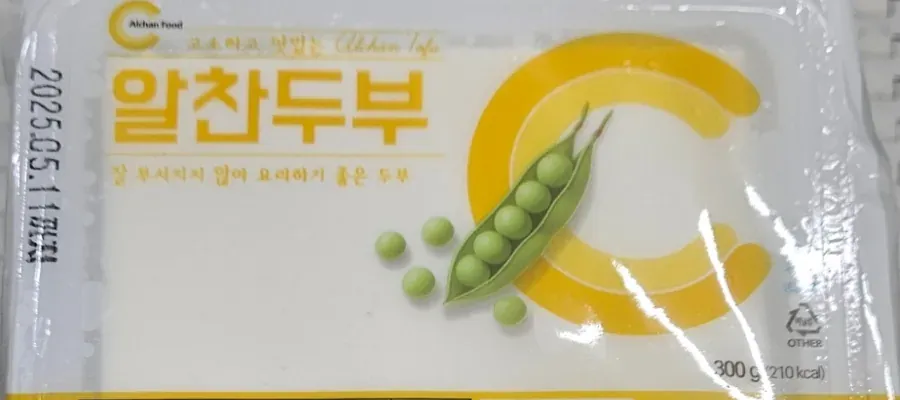
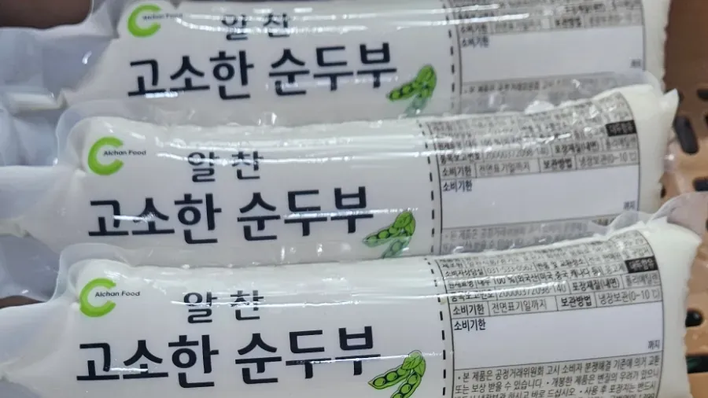

급식과 외식 프랜차이즈를 위한 두부를 만듭니다.

업소용 조각두부부터 소포장 두부와 순두부까지.

마파용 · 부침용 · 큐브

300g · 500g 포장두부

400g · 수입콩 / 국산콩 제품
다른 브랜드의 두부도 OEM으로 생산합니다.
콩을 불리지 않고 갈아 진공저온 농축공법으로 두부를 만듭니다. 알찬식품의 생산실과 제조 과정을 살펴보세요.
급식, 외식 프랜차이즈, 식자재 유통 납품과 OEM 생산을 상담합니다. 필요한 제품과 수량을 알려 주세요.